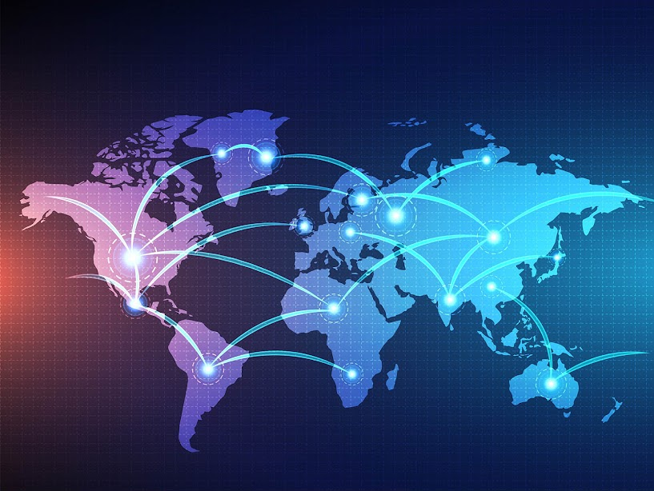

Глобалните мрежи са системи, които свързват държави, компании и хора чрез технологии и инфраструктура, позволявайки обмен на информация, ресурси и услуги по целия свят.
От древната търговия до съвременния интернет, глобалните мрежи се разрастват с развитието на технологиите.
Глобализацията разширява обхвата на тези мрежи, свързвайки все повече региони и култури.

- Комуникационни и интернет мрежи: Интернет и социалните мрежи позволяват глобална връзка и бърз обмен на информация.
- Икономически и финансови мрежи: Международните пазари, банки и борси създават глобална икономическа свързаност.
- Транспортни и логистични мрежи: Международните транспортни маршрути осигуряват движението на стоки и хора.
- Енергийни мрежи: Мрежи за доставка на енергийни ресурси като нефт, газ и електричество свързват производители и потребители по света.
- Основни компоненти: Инфраструктура (оптични влакна, транспортни маршрути), технологии и човешки ресурси.
- Технологични изисквания: Високоскоростни комуникации и модерни технологии като интернет на нещата (IoT).
- Организационни аспекти: Международни стандарти и регулатори за координиране на мрежите.
- Правни и етични аспекти: Закони за киберсигурност и защита на данни.
Предимства:
Недостатъци: